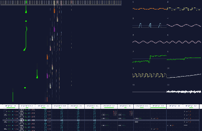
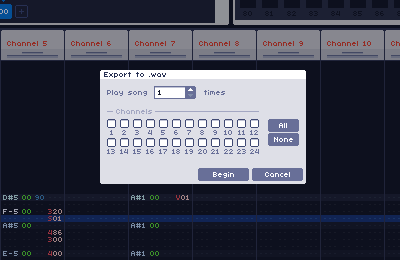

WaveTracker
WaveTracker is an open source chiptune music-making software for Windows. It has an easy built-in wavetable
Features
Drawing Waves
Create up to 100 different custom waves with easy-to-use tools.
24 Sound Channels
Up to 24 independent channels with a clean tracker interface and versatile effects.
Create Custom Instruments
Define up to 100 custom instrument macros with volume, arpeggio, pitch and timbre controls.
Import and Edit Samples
Import any .wav or .mp3 file to use in your songs.
Built-in Visualizer
See your song with the click of a button via a built-in piano roll and oscilloscope visualizer.
Export to .wav
Easily export any selection of channels to 44.1khz wav format.
For an in-depth explanation, view the official documentation.
About
WaveTracker started out as a university project and quickly grew into a full tracking software. It was developed by
Elias Ananiadis (@squiggythings) with the Monogame and N-Audio C# libraries.
I based it off of some of my favorite chiptune/music editing tools, most notably Famitracker and pxTone Collage. In a way, it combines
the tracker and instrument editing interface of Famitracker, with the audio and sample playback capabilities of pxTone.